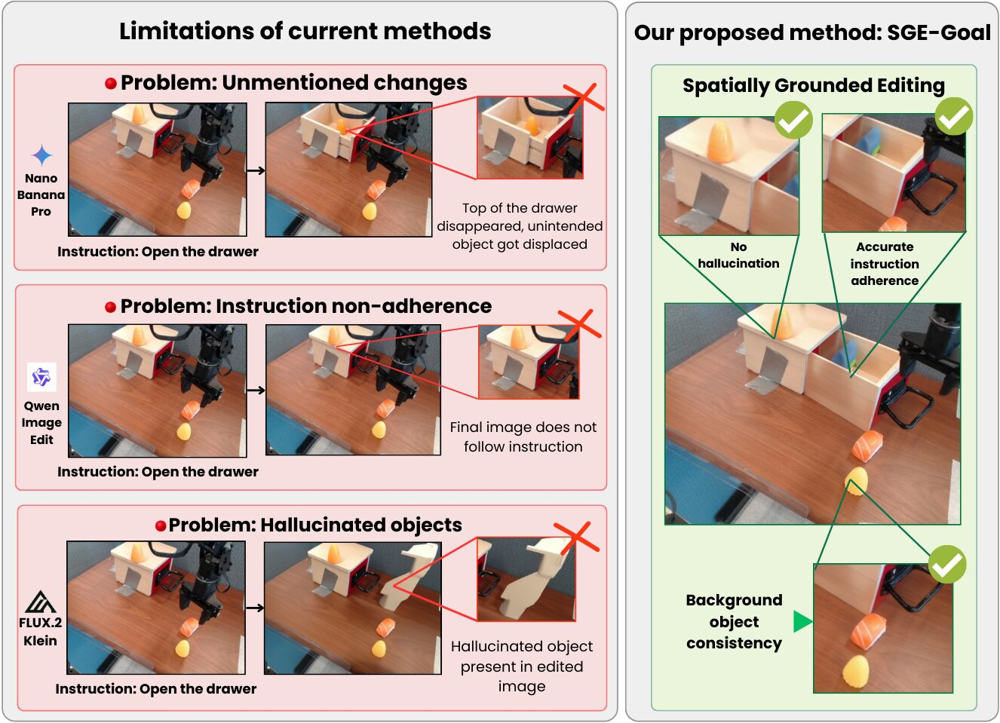
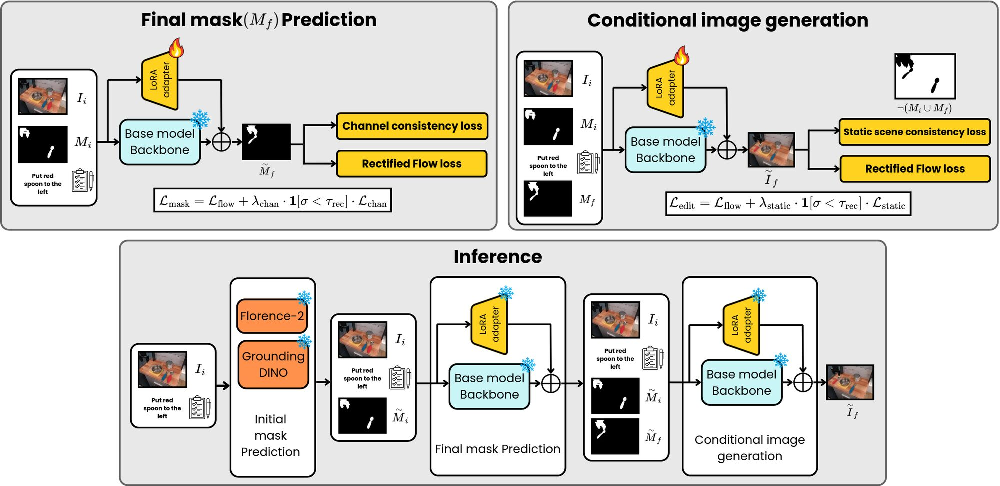
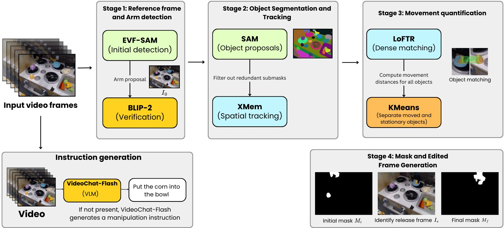
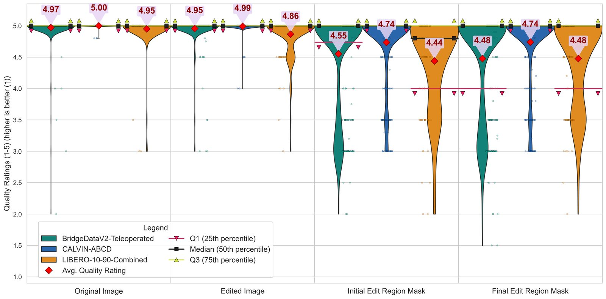
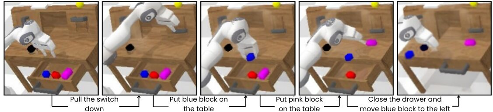

A better edit is not a better goal
Goal-conditioned manipulation policies are steered by a goal image, a picture of the desired post-manipulation scene synthesized from the current observation and a language instruction. The prevailing assumption is that better image-editing quality yields better goals, so goal generators are built and compared using general image-editing metrics. We show this assumption is false.
Across two independent goal-conditioned policies on CALVIN, the image editors that top aggregate editing-quality leaderboards (Gemini 3 Pro Image and GPT Image 1.5) produce worse control targets than our far smaller fine-tuned open models, and the gap widens sharply for the multi-step tasks robots actually face. A per-dimension analysis explains why: downstream policy success is governed almost entirely by manipulation adherence (selecting the right object and the right final state; Spearman ρ ≈ 0.9 with success), while photorealism and aesthetic fidelity — precisely where large proprietary editors excel — are uncorrelated with success (ρ ≈ 0). This dissociation holds on both CALVIN and the real-world-aligned SIMPLER-Bridge benchmark.
We then present SGE-Goal, a spatially-grounded decomposed editing framework that predicts initial and final 2D edit-region masks before goal-image synthesis. SGE-Goal turns open base models (FLUX.1 Kontext, FLUX.2 klein) into the strongest goal generators we evaluate on CALVIN, and second only to Gemini 3 Pro Image on SIMPLER-Bridge. Fine-tuned with SGE-Goal, they also hold up under chaining far better than the best proprietary editor, sustaining roughly seven times its success rate at five-step chains. Goal generators must be selected by downstream utility, not by editing-quality leaderboards.
What actually makes a good goal image
Editing-quality rankings and downstream success rankings disagree, on all three datasets and under both editing evaluators.
Editing quality is a misaligned proxy
Aggregate editing score correlates only weakly with policy success (ρ ≈ 0.67) and mis-orders the top methods.
Adherence predicts success; photorealism does not
An exact permutation test on CALVIN gives ρ = 0.98 (p < 10⁻³) for source adherence and ρ = 0.03 (p = 0.95) for photorealism.
A property of the goal images, not of one policy
GR-MG and GHIL-Glue rank the nine generators near-identically (ρ = 0.98), a third policy we fine-tuned ourselves (Octo) ranks them the same way, and the dissociation reproduces on SIMPLER-Bridge.
Visual goals beat text goals at every horizon
Image + text conditioning beats text-only conditioning at every chain length: 73.1% vs 59.0% at CL 1, widening to 30.9% vs 0.2% at CL 5.
SGE-Goal: ground the edit, then synthesize
Given the current observation Io and an instruction T, SGE-Goal predicts where the edit happens before it decides what the goal looks like. Grounding here means 2D localization of the edit as binary edit-region masks, not metric 3D reasoning.

Initial mask Mi
Training-free. Target objects parsed from the instruction are detected with Florence-2 and Grounding DINO, verified by BLIP-2 VQA, and segmented by SAM.
Final mask Mf
A LoRA on the base editor predicts where the objects end up after manipulation, with a channel-consistency loss (λ = 25, gated to σ < 0.35).
Goal image Îe
A second LoRA synthesizes the goal from (Io, T, Mi, Mf); a static-scene-consistency loss (λ = 7) preserves everything outside the edit region.
SGE-Goal operates on atomic instructions: composite instructions are decomposed into their atomic constituents and processed in sequence, with each generated goal becoming the next step's input.
Training data from raw robot video, without manual annotation
Each sample is a tuple (Io, Ie, Mi, Mf, T) extracted automatically by chaining vision foundation models.

Released datasets
| Dataset | Train | Val | Test | Hugging Face |
|---|---|---|---|---|
| BridgeDataV2 (teleoperated) | 40,851 | 1,000 | 2,000 | RiddhiCh/LGRM_BridgeDataV2_Teleoperated |
| CALVIN-ABCD | 22,000 | 966 | 1,087 | RiddhiCh/Calvin-Dataset-Final |
| LIBERO-10/90 (combined) | 6,464 | 358 | 376 | RiddhiCh/LGRM_Libero_10_90_Combined |
Splits are assigned by MD5 hashing (seed 42). Rows carry original_image, edited_image, initial_edit_region_mask, final_edit_region_mask and edit_instruction.



Downstream policy success
Only the goal generator varies; the goal-conditioned policies are frozen during evaluation. On CALVIN we use two released checkpoints (GR-MG, GHIL-Glue) and a third policy we fine-tuned ourselves (Octo-ft). FK = FLUX.1 Kontext [Dev], F2K = FLUX.2 [klein], base = untuned editor.
CALVIN (GR-MG and GHIL-Glue, chain lengths 1–5)
| GR-MG | GHIL-Glue | |||||||||
|---|---|---|---|---|---|---|---|---|---|---|
| Method | 1 | 2 | 3 | 4 | 5 | 1 | 2 | 3 | 4 | 5 |
| GT goal (oracle) | 73.6 | – | – | – | – | 39.0 | – | – | – | – |
| SGE-Goal (FK) | 73.1 | 59.7 | 47.3 | 36.8 | 30.9 | 29.2 | 12.0 | 3.7 | 0.8 | 0.0 |
| SGE-Goal (F2K) | 71.8 | 53.8 | 34.8 | 21.4 | 17.3 | 22.8 | 8.1 | 1.5 | 0.1 | 0.0 |
| Gemini 3 Pro Image | 63.3 | 36.9 | 18.1 | 8.1 | 4.4 | 13.2 | 2.4 | 0.0 | 0.0 | 0.0 |
| Clover | 63.2 | 34.2 | 12.8 | 3.6 | 1.9 | 17.3 | 3.2 | 0.2 | 0.0 | 0.0 |
| GPT Image 1.5 | 60.2 | 36.7 | 17.1 | 6.2 | 3.4 | 8.0 | 0.7 | 0.0 | 0.0 | 0.0 |
| Qwen Image Edit | 59.4 | 33.7 | 13.4 | 4.6 | 2.2 | 7.2 | 1.1 | 0.0 | 0.0 | 0.0 |
| SuSIE | 55.8 | 28.4 | 9.9 | 2.6 | 1.0 | 6.1 | 0.1 | 0.0 | 0.0 | 0.0 |
| FLUX.2 klein (base) | 52.0 | 29.6 | 13.4 | 5.2 | 2.9 | 2.9 | 0.0 | 0.0 | 0.0 | 0.0 |
| FLUX.1 Kontext (base) | 50.3 | 28.6 | 12.8 | 4.8 | 2.6 | 2.6 | 0.0 | 0.0 | 0.0 | 0.0 |
A third policy: Octo fine-tuned on CALVIN
GR-MG and GHIL-Glue are both released checkpoints. To check that the ranking is not specific to them, we fine-tuned Octo-Base on real CALVIN frames (it never sees any generator's output) and evaluated it on the same 1,087 test rows and chains, conditioned on the goal image alone. It ranks the nine generators like the other two policies (Spearman ρ = 0.95 with GR-MG, 0.88 with GHIL-Glue), and both SGE-Goal variants stay within 1.6 points of its ground-truth oracle at chain length 1, 13.3 points ahead of every other generator.
| Octo-ft · goal image only | |||||
|---|---|---|---|---|---|
| Method | 1 | 2 | 3 | 4 | 5 |
| GT goal (oracle) | 36.2 | 17.1 | 6.2 | 1.4 | 0.3 |
| SGE-Goal (FK) | 34.7 | 14.8 | 5.0 | 1.1 | 0.3 |
| SGE-Goal (F2K) | 35.6 | 16.7 | 5.4 | 1.3 | 0.3 |
| Gemini 3 Pro Image | 21.0 | 6.7 | 1.4 | 0.2 | 0.0 |
| Clover | 21.3 | 3.1 | 0.2 | 0.0 | 0.0 |
| GPT Image 1.5 | 21.0 | 2.1 | 0.3 | 0.0 | 0.0 |
| Qwen Image Edit | 19.1 | 2.7 | 0.1 | 0.0 | 0.0 |
| SuSIE | 15.6 | 1.9 | 0.1 | 0.0 | 0.0 |
| FLUX.2 klein (base) | 19.0 | 2.7 | 0.3 | 0.0 | 0.0 |
| FLUX.1 Kontext (base) | 19.7 | 0.9 | 0.1 | 0.0 | 0.0 |
SR % at chain lengths 1–5. Octo-ft has a lower ceiling than GR-MG, but within it the pattern is the same. It is evaluated on the goal image alone: given the instruction too, it solves most tasks from language and the generators then differ by only 4.0 points at chain length 1, against 20.0 goal-image-only.

SIMPLER-Bridge (GHIL-Glue)
| Method | Spoon | Carrot | Stack | Eggplant | Mean |
|---|---|---|---|---|---|
| Gemini 3 Pro Image | 16.7 | 29.2 | 0.0 | 4.2 | 12.5 |
| SGE-Goal (F2K) | 16.7 | 16.7 | 0.0 | 8.3 | 10.4 |
| SGE-Goal (FK) | 8.3 | 20.8 | 0.0 | 4.2 | 8.3 |
| SuSIE | 16.7 | 8.3 | 4.2 | 0.0 | 7.3 |
| Qwen Image Edit | 8.3 | 4.2 | 0.0 | 0.0 | 3.1 |
| GPT Image 1.5 | 4.2 | 0.0 | 0.0 | 4.2 | 2.1 |
| FLUX.2 klein (base) | 4.2 | 4.2 | 0.0 | 0.0 | 2.1 |
| FLUX.1 Kontext (base) | 4.2 | 4.2 | 0.0 | 0.0 | 2.1 |
| Clover | 4.2 | 0.0 | 0.0 | 0.0 | 1.0 |
SR % on the WidowX / BridgeData-V2 simulator, four atomic tasks × 24 episodes. GHIL-Glue is SuSIE's own low-level policy, yet both SGE-Goal variants surpass SuSIE.
Adherence vs. photorealism
| CALVIN | SIMPLER | |||
|---|---|---|---|---|
| Dimension (|ρ| with SR) | GR-MG | GHIL | Octo-ft | Bridge |
| R14 · source adherence | 0.92 | 0.95 | 0.87 | 0.85 |
| R15 · destination adherence | 0.90 | 0.88 | 0.88 | 0.66 |
| R13 · photorealism | 0.25 | 0.07 | 0.08 | 0.02 |
Absolute Spearman correlation between each dimension of our 15-dimension evaluator and downstream success (CALVIN averaged over chain lengths 1–5). Adherence predicts success on every benchmark and under all three CALVIN policies; photorealism does not.
The inversion: editing quality vs. control utility
Ranked by editing quality, the field's usual ordering returns — and it is wrong for manipulation. Gemini tops our human-aligned evaluator and GPT tops I2I-Bench, yet both are only mid-pack downstream.
| Our evaluator · rank ↓ | I2I-Bench · score ↑ | |||||
|---|---|---|---|---|---|---|
| Method | Bridge | CALVIN | LIBERO | Bridge | CALVIN | LIBERO |
| Gemini 3 Pro Image | 2.07 | 2.65 | 1.81 | 0.785 | 0.707 | 0.675 |
| GPT Image 1.5 | 5.15 | 5.09 | 3.04 | 0.801 | 0.716 | 0.774 |
| Qwen Image Edit | 4.14 | 4.17 | 2.06 | 0.646 | 0.642 | 0.680 |
| SGE-Goal (F2K) | 2.99 | 3.41 | 4.98 | 0.655 | 0.626 | 0.484 |
| SGE-Goal (FK) | 3.81 | 3.18 | 5.54 | 0.649 | 0.616 | 0.479 |
| Clover | – | 5.48 | – | – | 0.606 | – |
| SuSIE | 6.16 | 7.86 | 5.39 | 0.486 | 0.407 | 0.377 |
| FLUX.1 Kontext (base) | 5.48 | 7.33 | 6.51 | 0.533 | 0.449 | 0.378 |
| FLUX.2 klein (base) | 6.20 | 5.83 | 6.66 | 0.568 | 0.470 | 0.324 |
Our evaluator agrees with human judgment on 91.7% of 278 annotated triplets (I2I-Bench: 71.2%). It is a diagnostic that explains downstream behaviour, not a substitute for downstream evaluation.
Ablations: every spatial component helps
| CALVIN · GR-MG | CALVIN · GHIL-Glue | SIMPLER | |||||||||
|---|---|---|---|---|---|---|---|---|---|---|---|
| Variant | 1 | 2 | 3 | 4 | 5 | 1 | 2 | 3 | 4 | 5 | Bridge |
| FLUX.1 Kontext | |||||||||||
| SGE-Goal (full) | 73.1 | 59.7 | 47.3 | 36.8 | 30.9 | 29.2 | 12.0 | 3.7 | 0.8 | 0.0 | 8.3 |
| w/o final mask | 60.1 | 28.4 | 12.9 | 5.7 | 3.5 | 13.8 | 0.3 | 0.0 | 0.0 | 0.0 | 5.2 |
| w/o masks | 50.7 | 21.3 | 7.5 | 2.8 | 1.1 | 7.3 | 0.0 | 0.0 | 0.0 | 0.0 | 5.2 |
| base | 50.3 | 28.6 | 12.8 | 4.8 | 2.6 | 2.6 | 0.0 | 0.0 | 0.0 | 0.0 | 2.1 |
| FLUX.2 klein | |||||||||||
| SGE-Goal (full) | 71.8 | 53.8 | 34.8 | 21.4 | 17.3 | 22.8 | 8.1 | 1.5 | 0.1 | 0.0 | 10.4 |
| w/o final mask | 63.5 | 35.0 | 15.2 | 5.7 | 2.9 | 13.0 | 1.5 | 0.0 | 0.0 | 0.0 | 7.3 |
| w/o masks | 60.0 | 32.1 | 12.5 | 4.1 | 1.9 | 12.6 | 1.2 | 0.0 | 0.0 | 0.0 | 2.1 |
| base | 52.0 | 29.6 | 13.4 | 5.2 | 2.9 | 2.9 | 0.0 | 0.0 | 0.0 | 0.0 | 2.1 |
“full” uses both masks and the static-scene loss. The final edit-region mask is the dominant ingredient, and the masks matter most under long-horizon chaining.
| CALVIN · Octo-ft (goal image only) | CALVIN · Octo-ft (goal image only) | ||||||||||
|---|---|---|---|---|---|---|---|---|---|---|---|
| Variant | 1 | 2 | 3 | 4 | 5 | Variant | 1 | 2 | 3 | 4 | 5 |
| FLUX.1 Kontext | FLUX.2 klein | ||||||||||
| SGE-Goal (full) | 34.7 | 14.8 | 5.0 | 1.1 | 0.3 | SGE-Goal (full) | 35.6 | 16.7 | 5.4 | 1.3 | 0.3 |
| w/o final mask | 19.8 | 6.5 | 1.2 | 0.1 | 0.0 | w/o final mask | 24.6 | 3.4 | 0.5 | 0.0 | 0.0 |
| w/o masks | 15.1 | 2.4 | 0.2 | 0.0 | 0.0 | w/o masks | 25.7 | 6.6 | 0.9 | 0.1 | 0.0 |
| base | 19.7 | 0.9 | 0.1 | 0.0 | 0.0 | base | 19.0 | 2.7 | 0.3 | 0.0 | 0.0 |
The same ablation under Octo-ft. The full model leads both ablations at every chain length; removing the final mask costs 14.9 (FK) and 11.0 (F2K) points at chain length 1. Unlike under GR-MG, for FLUX.2 klein the initial mask alone adds nothing over no masks (24.6 vs 25.7, within noise).
Runtime
| Inference stage (A10G) | Time (s) |
|---|---|
| Initial mask Mi | 2.47 |
| Final mask Mf | 5.16 |
| Goal image Îe | 2.92 |
| Total | 10.55 |
| Data generation (A6000, one-time) | Time (s) |
|---|---|
| EVF-SAM + BLIP-2 | 4.46 |
| SAM (first frame) | 1.07 |
| XMem tracking | 7.76 |
| LoFTR + KMeans | 8.74 |
Goal images side by side
SGE-Goal moves the instructed object to the instructed place and leaves the rest of the scene alone. General editors often change unmentioned objects, ignore the instruction or hallucinate content.


Click an image to open it at full resolution.
Everything runs on open models
Data generation, both fine-tuned stages and the diagnostic evaluator are reproducible without any proprietary API.
Code
The SGE-Goal framework (training and inference for both base editors), data pipeline, 15-dimension evaluator, downstream harnesses and baselines.
Checkpoints
Step 2 and Step 3 LoRA adapters for FLUX.1 Kontext and FLUX.2 klein on all three datasets, plus mask-ablation adapters, with checksums.
Datasets
Processed BridgeDataV2, CALVIN-ABCD and LIBERO-10/90 tuples on the Hugging Face Hub.
Paper
The camera-ready paper and supplement will be linked here once published.
BibTeX
@inproceedings{chatterjee2027goalimages,
title = {Goal Images Are Control Targets: Spatially-Grounded
Goal-Image Synthesis for Robotic Manipulation},
author = {Chatterjee, Riddhi and Shrirao, Ritish and Mehrotra, Kushagra
and Gopalakrishnan, Viswanath},
booktitle = {Proceedings of the IEEE/CVF Winter Conference on
Applications of Computer Vision (WACV)},
year = {2027}
}